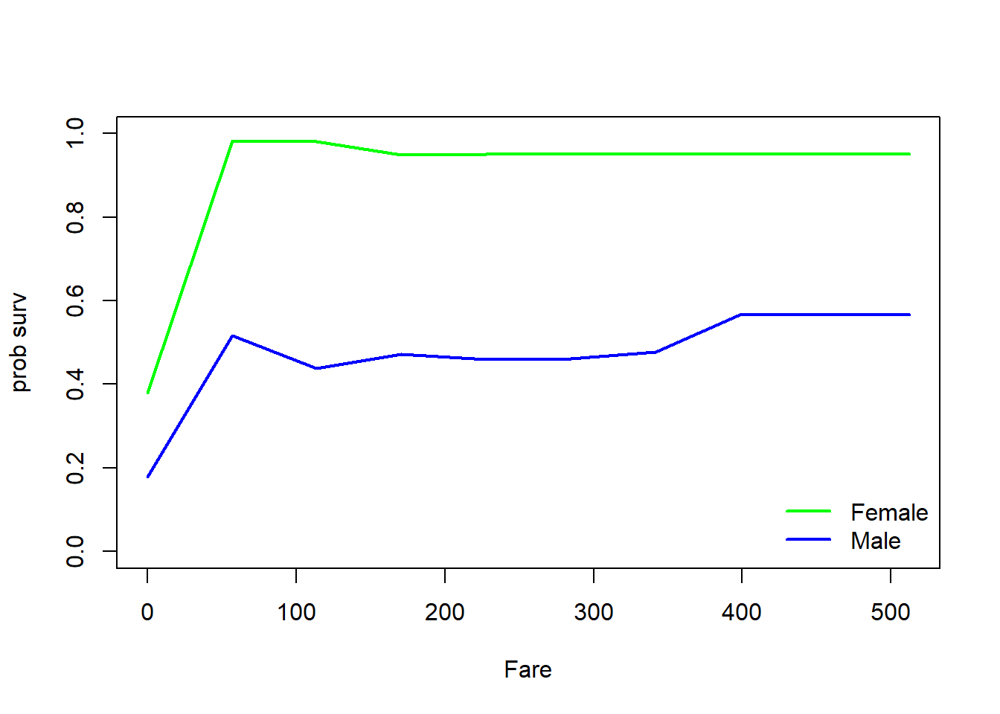
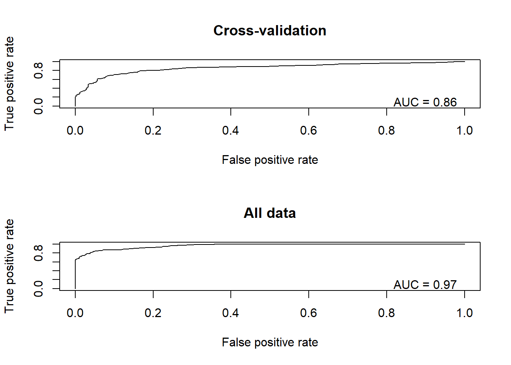

Machine Learning
NRES 746
December 12, 2016
Now we will run the same titanic analysis, but using a machine learning method- in this case, Random Forest. Just for kicks!
Let’s set up the workspace with the functions and packages we need!
suppressMessages(suppressWarnings(library(party)))
source_github <- function(baseurl,scriptname) {
# load package
suppressMessages(suppressWarnings(require(RCurl)))
# read script lines from website
url <- sprintf("%s%s",baseurl,scriptname)
script <- getURL(url, ssl.verifypeer = FALSE)
script <- gsub("\r\n", "\n", script) # get rid of carriage returns (not sure why this is necessary...)
# parse lines and evaluate in the global environement
eval(parse(text = script), envir= .GlobalEnv)
}
baseurl = "https://raw.githubusercontent.com/kevintshoemaker/Random-Forest-Functions/master/"
source_github(baseurl,"RF_Extensions.R")First, we read in the data
titanic <- read.csv("titanic.csv",header=T)
head(titanic)## PassengerId Survived Pclass
## 1 1 0 3
## 2 2 1 1
## 3 3 1 3
## 4 4 1 1
## 5 5 0 3
## 6 6 0 3
## Name Sex Age SibSp
## 1 Braund, Mr. Owen Harris male 22 1
## 2 Cumings, Mrs. John Bradley (Florence Briggs Thayer) female 38 1
## 3 Heikkinen, Miss. Laina female 26 0
## 4 Futrelle, Mrs. Jacques Heath (Lily May Peel) female 35 1
## 5 Allen, Mr. William Henry male 35 0
## 6 Moran, Mr. James male NA 0
## Parch Ticket Fare Cabin Embarked
## 1 0 A/5 21171 7.2500 S
## 2 0 PC 17599 71.2833 C85 C
## 3 0 STON/O2. 3101282 7.9250 S
## 4 0 113803 53.1000 C123 S
## 5 0 373450 8.0500 S
## 6 0 330877 8.4583 QWhen using categorical variables, we should make sure they are encoded as factors, not as numeric. Use class(data$Resp) to check the encoding, and use as.factor(data$Resp) to encode your vector as a factor.
titanic$Survived <- as.factor(titanic$Survived)Now let’s define the predictors and response:
predictorNames <- c( "Sex", # nice readable names
"Age",
"Sibs/spouses",
"Parents/children",
"Fare"
)
pred.names=c( "Sex",
"Age",
"SibSp",
"Parch",
"Fare"
)
# cbind(pred.names,predictorNames)
response="Survived"
formula1 <- as.formula(paste(response,"~",paste(pred.names,collapse="+"))) # formula for the RF modelRun a conditional inference tree
This is also known as a CART analysis- single tree!
TerrMamm.tr <- ctree(formula=formula1, data=titanic, controls = ctree_control(mincriterion = 0.85,maxdepth = 3))
plot(TerrMamm.tr)
But remember that a single tree is not very robust- these are very liable to over-fitting! Random forest gets around this using random sampling in several creative ways!
Like most machine learning algorithms, we can “tune” the algorithm in several different ways. If this were a “real” analysis, I would try several alternative tunings.
cforestControl <- cforest_unbiased(ntree=500,mtry=3) # change back to 500!!
cforestControl@fraction <- 0.75
cforestControl@gtctrl@mincriterion <- 0.75
rf_model1 <- cforest(formula1, controls=cforestControl, data=titanic)Variable importance
One thing we can easily get from a RF analysis is an index of the relative importance of each predictor variable
# get the importance values
model1_importance<-varimp((rf_model1), conditional= FALSE)
lengthndx <- length(model1_importance)
#par(mai=c(0.95,3.1,0.6,0.4))
par(mai=c(1.4,3.4,0.6,0.9))
col <- rainbow(lengthndx, start = 3/6, end = 4/6)
barplot(height=model1_importance[order(model1_importance,decreasing = FALSE)],
horiz=T,las=1,main="Order of Importance of Predictor Variables",
xlab="Index of overall importance",col=col,
names.arg=predictorNames[match(names(model1_importance),pred.names)][order(model1_importance,decreasing = FALSE)])
Univariate plots
We can also generate univariate plots, also known as “partial dependence plots”:
##### Make univariate plots of the relationships- plot one relationship at a time
RF_UnivariatePlots(object=rf_model1, varimp=model1_importance, data=titanic, #
predictors=pred.names[1], labels=predictorNames[1], allpredictors=pred.names,plot.layout=c(1,1))RF_UnivariatePlots(object=rf_model1, varimp=model1_importance, data=titanic, #
predictors=pred.names[3], labels=predictorNames[3], allpredictors=pred.names,plot.layout=c(1,1))
RF_UnivariatePlots(object=rf_model1, varimp=model1_importance, data=titanic, #
predictors=pred.names[5], labels=predictorNames[5], allpredictors=pred.names,plot.layout=c(1,1))
RF_UnivariatePlots(object=rf_model1, varimp=model1_importance, data=titanic, #
predictors=pred.names[2], labels=predictorNames[2], allpredictors=pred.names,plot.layout=c(1,1))
Finally, and perhaps most importantly, we can find and plot the most important interactions!
# NOTE: this one can take a very long time ...
rf_findint <- RF_FindInteractions(object=rf_model1,data=titanic,predictors=pred.names)## 1 2 3 4rf_findint$interactions1## Sex Age SibSp Parch Fare
## Sex 0 0.8683 2.7716 3.4182 1.0656
## Age 0 0.0000 0.6304 1.2499 0.3630
## SibSp 0 0.0000 0.0000 0.5581 0.5331
## Parch 0 0.0000 0.0000 0.0000 0.1732
## Fare 0 0.0000 0.0000 0.0000 0.0000rf_findint$rank.list1## var1.index var1.names var2.index var2.names int.size
## 1 4 Parch 1 Sex 3.4182
## 2 3 SibSp 1 Sex 2.7716Interactions
### plot interaction strength
lengthndx <- min(9,nrow(rf_findint$rank.list1))
par(mai=c(0.95,3.1,0.6,0.4))
barplot(height=(rf_findint$rank.list1[c(1:min(9,nrow(rf_findint$rank.list1))),5][c(lengthndx:1)]),
horiz=T,las=1,main=paste(response, sep=""),
xlab="Index of interaction strength",col=brewer.pal(lengthndx,"Blues"),
names.arg=paste("",predictorNames[match(rf_findint$rank.list1[,2][c(lengthndx:1)],pred.names)],"\n",predictorNames[match(rf_findint$rank.list1[,4][c(lengthndx:1)],pred.names)],sep="") )## Warning in brewer.pal(lengthndx, "Blues"): minimal value for n is 3, returning requested palette with 3 different levels
Now let’s visualize the interactions:
rf_findint$rank.list1## var1.index var1.names var2.index var2.names int.size
## 1 4 Parch 1 Sex 3.4182
## 2 3 SibSp 1 Sex 2.7716fam="binomial"
RF_InteractionPlots(x=1,y=4,object=rf_model1,data=titanic,predictors=pred.names,family=fam) ## maximum value = 0.8
RF_InteractionPlots(x=1,y=3,object=rf_model1,data=titanic,predictors=pred.names,family=fam) ## maximum value = 0.8
RF_InteractionPlots(x=2,y=4,object=rf_model1,data=titanic,predictors=pred.names,family=fam) ## maximum value = 0.47Model performance
Finally, let’s bring this home by looking at model performance!
###################################
#################### CROSS VALIDATION CODE
n.folds = 10 # set the number of "folds"
foldVector = rep(c(1:n.folds),times=floor(length(titanic$Survived)/9))[1:length(titanic$Survived)]Then, we do the cross validation, looping through each fold of the data, leaving out each fold in turn for model training.
counter = 1
CV_df <- data.frame(
CVprediction = numeric(nrow(titanic)), # make a data frame for storage
realprediction = 0,
realdata = 0
)
for(i in 1:n.folds){
fit_ndx <- which(foldVector!=i)
validate_ndx <- which(foldVector==i)
model <- cforest(formula1, data = titanic[fit_ndx,], controls=cforestControl)
predict_CV <- predict(model,newdata=titanic[validate_ndx,],type="prob")
predict_real <- predict(rf_model1,newdata=titanic[validate_ndx,],type="prob")
REAL <- titanic$Survived[validate_ndx]
for(j in 1:length(which(foldVector==i))){
CV_df$CVprediction[counter] <- as.numeric(predict_CV[[j]][,2])
CV_df$realprediction[counter] <- as.numeric(predict_real[[j]][,2])
CV_df$realdata[counter] <- REAL[j]
counter = counter + 1
}
}
fact=TRUE
if(fact){
CV_df$realdata=CV_df$realdata-1
}
CV_RMSE = sqrt(mean((CV_df$realdata - CV_df$CVprediction)^2)) # root mean squared error for holdout samples in 10-fold cross-validation
real_RMSE = sqrt(mean((CV_df$realdata - CV_df$realprediction)^2)) # root mean squared error for residuals from final model
# print RMSE statistics
cat("The RMSE for the model under cross-validation is: ", CV_RMSE, "\n")## The RMSE for the model under cross-validation is: 0.3859742cat("The RMSE for the model using all data for training is: ", real_RMSE, "\n")## The RMSE for the model using all data for training is: 0.3735637Let’s plot out the ROC curves!
library(ROCR)
library(rms)
par(mfrow=c(2,1))
pred <- prediction(CV_df$CVprediction,CV_df$realdata) # for holdout samples in cross-validation
perf <- performance(pred,"tpr","fpr")
auc <- performance(pred,"auc")
plot(perf, main="Cross-validation")
text(.9,.1,paste("AUC = ",round(auc@y.values[[1]],2),sep=""))
pred <- prediction(CV_df$realprediction,CV_df$realdata) # for final model
perf <- performance(pred,"tpr","fpr")
auc <- performance(pred,"auc")
plot(perf, main="All data")
text(.9,.1,paste("AUC = ",round(auc@y.values[[1]],2),sep=""))
Finally, we can use the same pseudo-R-squared metric we learned above as an alternative metric of performance
CV_df$CVprediction[which(CV_df$CVprediction==1)] <- 0.9999 # ensure that all predictions are not exactly 0 or 1
CV_df$CVprediction[which(CV_df$CVprediction==0)] <- 0.0001
CV_df$realprediction[which(CV_df$realprediction==1)] <- 0.9999
CV_df$realprediction[which(CV_df$realprediction==0)] <- 0.0001
fit_deviance_CV <- mean(-2*(dbinom(CV_df$realdata,1,CV_df$CVprediction,log=T)-dbinom(CV_df$realdata,1,CV_df$realdata,log=T)))
fit_deviance_real <- mean(-2*(dbinom(CV_df$realdata,1,CV_df$realprediction,log=T)-dbinom(CV_df$realdata,1,CV_df$realdata,log=T)))
null_deviance <- mean(-2*(dbinom(CV_df$realdata,1,mean(CV_df$realdata),log=T)-dbinom(CV_df$realdata,1,CV_df$realdata,log=T)))
deviance_explained_CV <- (null_deviance-fit_deviance_CV)/null_deviance # based on holdout samples
deviance_explained_real <- (null_deviance-fit_deviance_real)/null_deviance # based on full model...
# print RMSE statistics
cat("The McFadden R2 for the model under cross-validation is: ", deviance_explained_CV, "\n")## The McFadden R2 for the model under cross-validation is: 0.3024121cat("The McFadden R2 for the model using all data for training is: ", deviance_explained_real, "\n")## The McFadden R2 for the model using all data for training is: 0.3379473